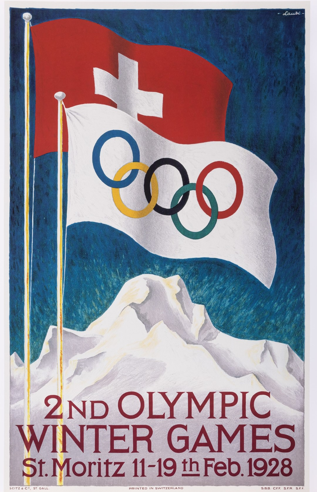
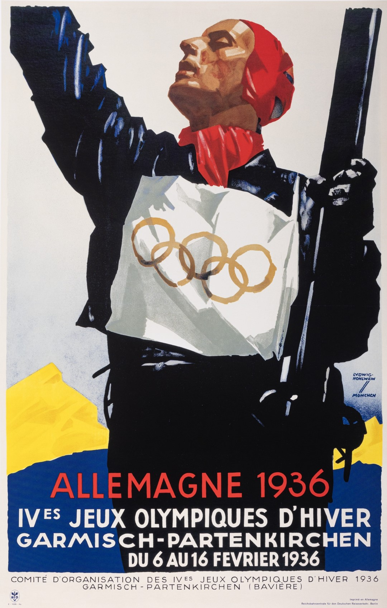
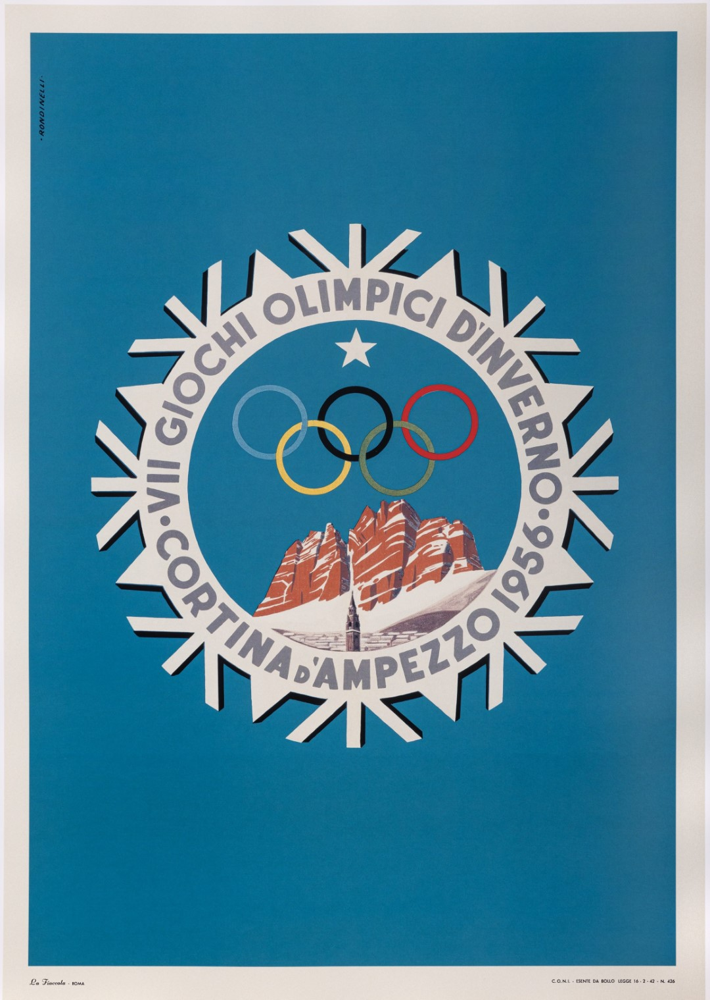
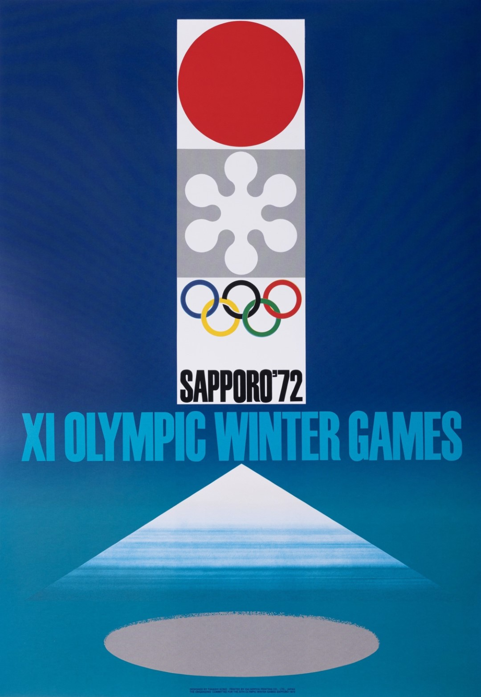
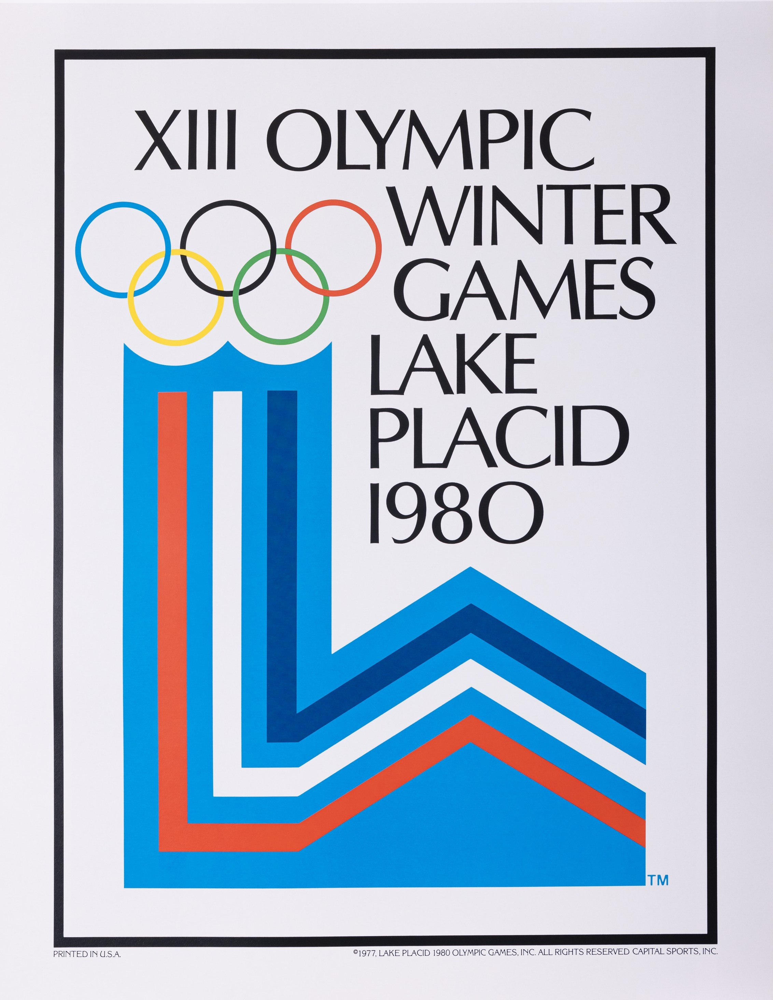
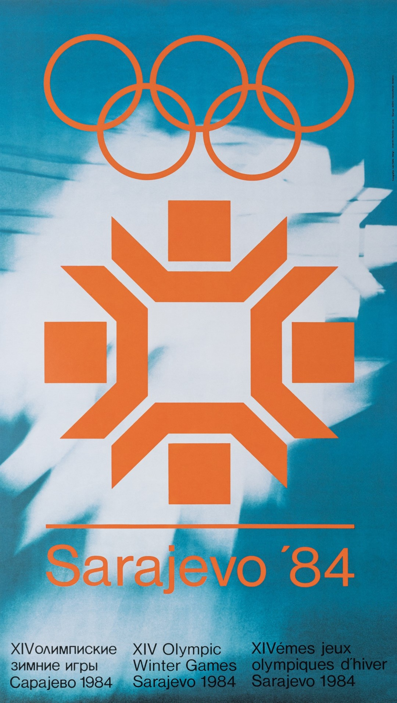
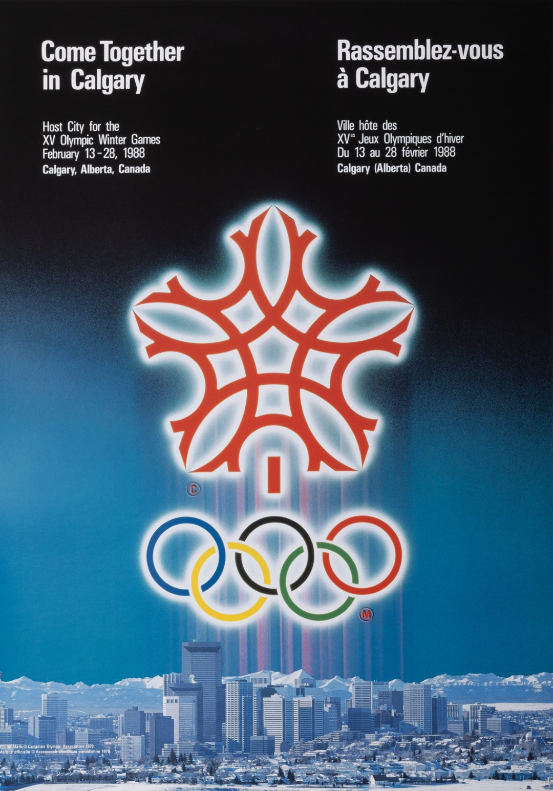
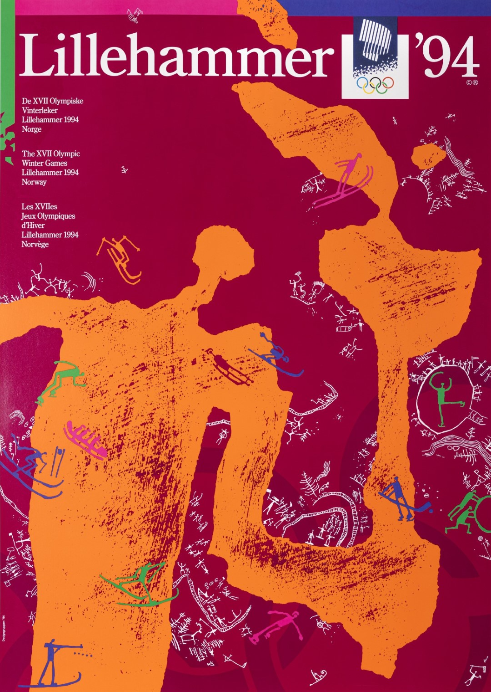
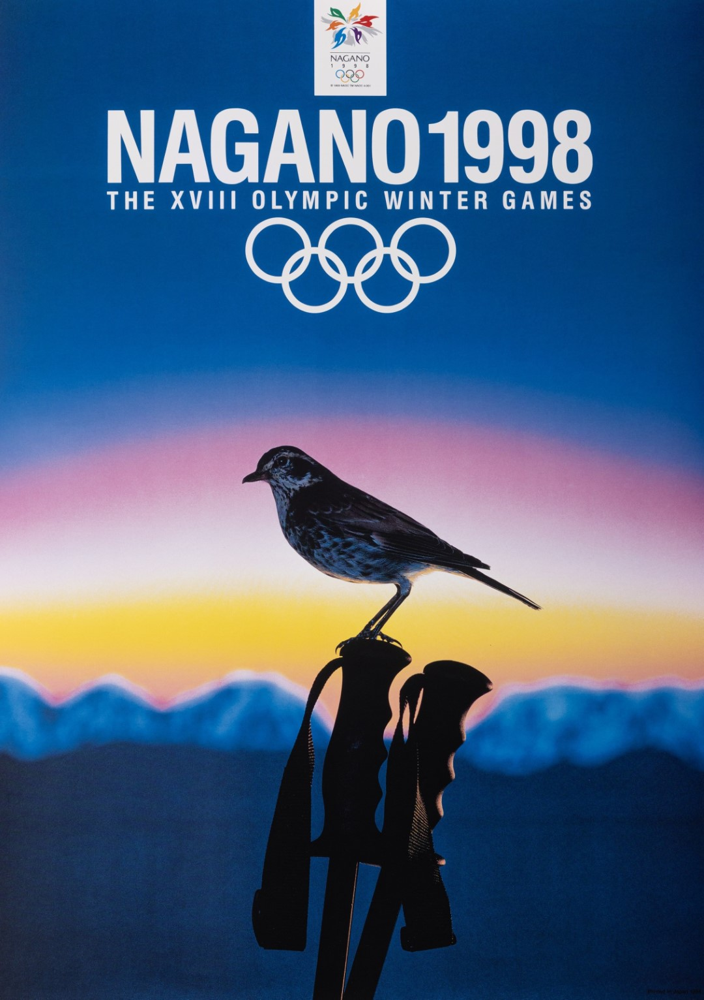
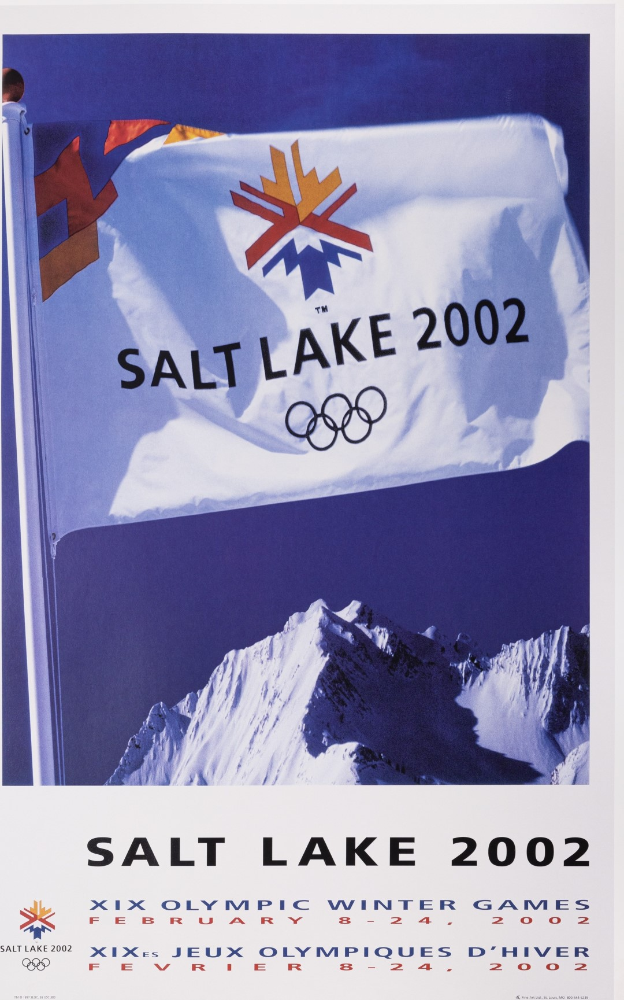

Zimske Olimpijske igre
KRONOLOGIJA
11. - 19. 2.1928.
II. Zimske olimpijske igre St. Moritz 1928. • 25 država • 464 sportaša • 4 sporta • 14 natjecanja • najviše osvojenih zlatnih medalja: Norveška (6) • najviše ukupno osvojenih medalja: Norveška (15)


Plakat Zimskih olimpijskih igara u St. Moritzu, GMV 106603
6. - 16. 2. 1936.
IV. Zimske olimpijske igre Garmisch-Partenkirchen 1936. • 28 država • 646 sportaša • 4 sporta • 17 natjecanja • najviše osvojenih zlatnih medalja: Norveška (7) • najviše ukupno osvojenih medalja: Norveška (15)

Plakat Zimskih olimpijskih igara u Garmisch-Partenkirchenu, GMV 106604
26. 1. - 5. 2. 1956.
VII. Zimske olimpijske igre Cortina d'Ampezzo 1956 . • 26. siječnja – 5. veljače • 32 države • 821 sportaš • 4 sporta • 24 natjecanja • najviše osvojenih zlatnih medalja: SSSR (7) • najviše ukupno osvojenih medalja: SSSR (16)

Plakat Zimskih olimpijskih igara u Cortini d'Ampezzo , GMV 106605
3. - 13. 2. 1972.
XI. Zimske olimpijske igre Sapporo 1972. • 35 država • 1006 sportaša • 6 sportova • 35 natjecanja • najviše osvojenih zlatnih medalja: SSSR (8) • najviše ukupno osvojenih medalja: SSSR (16)

Plakat Zimskih olimpijskih igara u Sapporu, GMV 10606
3. - 24. 2. 1980.
XIII. Zimske olimpijske igre Lake Placid 1980. • 37 država • 1072 sportaša • 6 sportova • 38 natjecanja • najviše osvojenih zlatnih medalja: SSSR (10) • najviše ukupno osvojenih medalja: Njemačka Demokratska Republika (23)

Plakat Zimskih olimpijskih igara u Lake Placidu, GMV 106607
8. - 19. 2. 1984.
XIV. Zimske olimpijske igre Sarajevo 1984. • 49 država • 1272 sportaša • 6 sportova • 39 natjecanja • najviše osvojenih zlatnih medalja: Njemačka Demokratska Republika (9) • najviše ukupno osvojenih medalja: SSSR (25)

Plakat Zimskih olimpijskih igara u Sarajevu, GMV 106587
13. - 28. 2. 1988.
XV. Zimske olimpijske igre Calgary 1988. • 57 država • 1423 sportaša • 6 sportova • 46 natjecanja • najviše osvojenih zlatnih medalja: SSSR (11) • najviše ukupno osvojenih medalja: SSSR (29)

Plakat Zimskih olimpijskih igara u Calgaryju
8. – 23. 2. 1992.
XVI. Zimske olimpijske igre Albertville 1992. • 64 države • 1801 sportaš • 6 sportova • 57 natjecanja • najviše osvojenih zlatnih medalja: Njemačka (10) • najviše ukupno osvojenih medalja: Njemačka (26)
12. - 27. 2.1994.
XVII. Zimske olimpijske igre Lillehammer 1994. • 67 država • 1737 sportaša • 6 sportova • 61 natjecanje • najviše osvojenih zlatnih medalja: Rusija (11) • najviše ukupno osvojenih medalja: Norveška (26)

Plakat Zimskih olimpijskih igara u Lillehammeru
7. - 22. 2. 1998.
XVIII. Zimske olimpijske igre Nagano 1998. • 72 države • 2176 sportaša • 7 sportova • 68 natjecanja • najviše osvojenih zlatnih medalja: Njemačka (12) • najviše ukupno osvojenih medalja: Njemačka (29)

Plakat Zimskih olimpijskih igara u Naganu
8. - 24. 2. 2002.
XIX. Zimske olimpijske igre Salt Lake City 2002. • 78 država • 2399 sportaša • 7 sportova • 78 natjecanja • najviše osvojenih zlatnih medalja: Norveška (13) • najviše ukupno osvojenih medalja: Njemačka (36)
